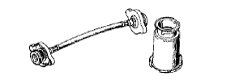

Cylinder head gasket (1NZ-FE (4WD)) Preparation [Installation]
 | 09213-58013 | Crank shaft pulley Holding tool |
 | (91111-50845) | bolt |
 | 09330-00021 | Companion flange Holding tool |
 | 09950-60010 | Replayer set |
 | (09951-00250) | Replacer 25 |
 | (09951-00410) | Replacer 41 |
 | (09952-06010) | adapter |
 | 09950-70010 | Handle set |
 | (09951-07100) | Handle 100 |
 | 09960-10010 | Barrierable pin wrench set |
 | (09962-01000) | Variable Pin Lenchia-M ASSY |
| (09963-00700) | Pin 7 |
| 09043-50080 | Double hexagon 8 wrench |
| Hexagon wrench (2 mm wide width) | ||
| Noogis (0-200mm) | ||
| Direct regulations, push pull gauge | ||
 | 95506-00090 | Belt tension gauge (Denso part number) 95506-00090 Treated as Denso Co., Ltd. |
 | RCT-2A | Radie-Ta-Cap Testa- Treated as Banzai Co., Ltd. |
|  | RCT-2A-30s | Radie-Ta-Cap Testa- Adapter set A Treated as Banzai Co., Ltd. |
 | RCT-2 | Radiator cap tester Treatment of Iyasaka Co., Ltd. |
 | RCT-2-Ast | Radiator cap Tester adapter set A Treatment of Iyasaka Co., Ltd. |
 | QL-100N | QL Torque wrench (100N) Banzai Co., Ltd. |
| QL-200N | QL Torque wrench (200N) Banzai Co., Ltd. |
| QL-25n | QL Torque wrench (25n) Banzai Co., Ltd. |
| QL-50N | QL Torque wrench (50N) Banzai Co., Ltd. |
| Toyota genuine MP grease No.2 | ||
| Toyota genuine Super Long Life Coolant | ||
| Toyota genuine engine oil | ||
| String | ||
| paint | ||
| Fragment | ||
| Seal packing black V93500113 Treated as a takty Co., Ltd. |